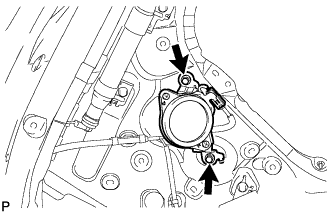

ДИНАМИК В БАГАЖНОМ ОТДЕЛЕНИИ (для 3-дверных моделей) > УСТАНОВКА |
| 1. УСТАНОВИТЕ ДИНАМИК С КОРПУСОМ № 1 В СБОРЕ |
Установите динамик с корпусом № 1 и закрепите его 4 болтами.
Подсоедините разъем.
| 2. УСТАНОВИТЕ ПРАВУЮ БОКОВУЮ ОБЛИЦОВОЧНУЮ ПАНЕЛЬ ПОЛКИ БАГАЖНОГО ОТДЕЛЕНИЯ |
Подсоедините разъем.
Введите в зацепление 9 захватов и 11 фиксаторов, чтобы установить боковую облицовочную панель полки багажного отделения.
Вверните 3 болта и 2 винта.
Установите напольное крепление ремня безопасности заднего сиденья № 1 и закрепите его болтом.
Установите напольное крепление наружных ремней безопасности передних сидений и закрепите его болтом.
| 3. УСТАНОВИТЕ НАКЛАДКУ КРЕПЛЕНИЯ ПОЯСНОГО РЕМНЯ БЕЗОПАСНОСТИ |
Введите в зацепление 3 захвата, чтобы установить накладку крепления поясного ремня безопасности.
| 4. УСТАНОВИТЕ КРЫШКУ ОТВЕРСТИЯ В ПРАВОЙ ЗАДНЕЙ БОКОВОЙ ОБЛИЦОВОЧНОЙ НАКЛАДКЕ |
| 5. УСТАНОВИТЕ УПЛОТНИТЕЛЬ ОБШИВКИ ПРОЕМА ПРАВОЙ ПЕРЕДНЕЙ ДВЕРИ |
| 6. УСТАНОВИТЕ ОПОРНУЮ НАКЛАДКУ ПРАВОЙ ДВЕРИ В СБОРЕ |
| 7. УСТАНОВИТЕ ЗАДНИЙ ГОЛОВНОЙ ДИНАМИК В СБОРЕ |
|  |
Установите задний головной динамик и закрепите его 2 болтами.
Подсоедините разъем.
| 8. УСТАНОВИТЕ ЛЕВУЮ ЗАДНЮЮ БОКОВУЮ ОБЛИЦОВОЧНУЮ ПАНЕЛЬ В СБОРЕ |
Введите в зацепление 4 захвата и 2 направляющих и пропустите напольное крепление ремня безопасности заднего сиденья № 1 через заднюю боковую облицовочную панель.
Введите в зацепление 7 фиксаторов, чтобы установить заднюю боковую облицовочную панель.
| 9. УСТАНОВИТЕ ЛЕВУЮ БОКОВУЮ ОБЛИЦОВОЧНУЮ ПАНЕЛЬ ПОЛКИ БАГАЖНОГО ОТДЕЛЕНИЯ В СБОРЕ |
Введите в зацепление 9 захватов и 11 фиксаторов, чтобы установить боковую облицовочную панель полки багажного отделения.
Вверните 3 болта и 2 винта.
Установите напольное крепление ремня безопасности заднего сиденья № 1 и закрепите его болтом.
Установите напольное крепление наружных ремней безопасности передних сидений и закрепите его болтом.
| 10. УСТАНОВИТЕ НАКЛАДКУ КРЕПЛЕНИЯ ПОЯСНОГО РЕМНЯ БЕЗОПАСНОСТИ |
Введите в зацепление 3 захвата, чтобы установить накладку крепления поясного ремня безопасности.
| 11. УСТАНОВИТЕ КАРМАН В ЗАДНЕЙ БОКОВОЙ ОБЛИЦОВОЧНОЙ ПАНЕЛИ |
Введите в зацепление 6 захватов и 2 направляющих, чтобы установить карман в задней боковой облицовочной панели.
| 12. УСТАНОВИТЕ ПЕРЕДНЮЮ БОКОВУЮ ОБЛИЦОВОЧНУЮ НАКЛАДКУ ПОЛКИ БАГАЖНОГО ОТДЕЛЕНИЯ (для моделей с задней крышкой) |
Введите в зацепление 2 захвата, чтобы закрепить переднюю боковую облицовочную накладку полки багажного отделения.
| 13. УСТАНОВИТЕ КОЛПАЧОК КРЕПЛЕНИЯ ЗАДНЕЙ КРЫШКИ № 1 (для моделей без задней крышки) |
Введите в зацепление 2 захвата, чтобы закрепить колпачок крепления задней крышки.
| 14. УСТАНОВИТЕ ЗАЩЕЛКУ ОБЛИЦОВКИ БАГАЖНОГО ОТДЕЛЕНИЯ № 1 |
Установите защелку облицовочной панели багажного отделения № 1 так, чтобы она была расположена горизонтально.
| 15. УСТАНОВИТЕ ЗАДНИЙ НАПОЛЬНЫЙ КОВРИК |
Установите задний напольный коврик.
| 16. УСТАНОВИТЕ КРЫШКУ ОТВЕРСТИЯ В ЗАДНЕЙ БОКОВОЙ ОБЛИЦОВОЧНОЙ НАКЛАДКЕ |
Введите в зацепление 2 захвата и 2 направляющих, чтобы установить крышку отверстия в задней боковой облицовочной панели.
| 17. УСТАНОВИТЕ ЗАДНЮЮ ОПОРНУЮ ПЛАСТИНУ КОВРИКА ЗАДНЕГО ПОЛА |
Введите в зацепление 6 захватов, чтобы установить заднюю опорную пластину коврика заднего пола.
Заверните 5 винтов.
| 18. УСТАНОВИТЕ НАКЛАДКУ КОМПЛЕКТА НАПОЛЬНЫХ КОВРИКОВ |
Введите в зацепление 2 захвата, чтобы установить накладку установочной пластины коврика.
| 19. УСТАНОВИТЕ ЗАДНЮЮ КРЫШКУ В СБОРЕ (для моделей с задней крышкой) |
Установите заднюю крышку.
| 20. УСТАНОВИТЕ УПЛОТНИТЕЛЬ ОБШИВКИ ПРОЕМА ЛЕВОЙ ПЕРЕДНЕЙ ДВЕРИ |
 |
Совместите нанесенную краской отметку на уплотнителе обшивки проема передней двери с отмеченным положением на автомобиле и установите уплотнитель обшивки проема передней двери, как показано на рисунке.
| *1 | Метка, нанесенная краской |
| *2 | Положение метки |
| 21. УСТАНОВИТЕ ОПОРНУЮ НАКЛАДКУ ЛЕВОЙ ДВЕРИ В СБОРЕ |
Введите в зацепление 4 фиксатора, 10 захватов и 2 направляющие, чтобы установить опорную накладку двери.
| 22. УСТАНОВИТЕ ЗАДНЕЕ СИДЕНЬЕ № 1 В СБОРЕ |
для опускаемых сидений раздельного типа 60/40 с левой стороны
Установите заднее сиденье № 1 в сборе (Нажмите здесь).
для опускаемых сидений раздельного типа 60/40 с правой стороны
Установите заднее сиденье № 1 в сборе (Нажмите здесь).
| 23. ПОДСОЕДИНИТЕ ПРОВОД К ОТРИЦАТЕЛЬНОМУ ВЫВОДУ АККУМУЛЯТОРНОЙ БАТАРЕИ |